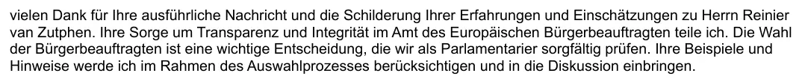

Bewijsstuk · E-mail
Europarlementariër Moritz Körner aan Giltay, 11 december 2024
De passage
“Hartelijk dank voor uw uitvoerige bericht en de beschrijving van uw ervaringen en inschattingen met betrekking tot de heer Reinier van Zutphen. Uw zorg om transparantie en integriteit in het ambt van de Europese Ombudsman deel ik. De verkiezing van de Ombudsman is een belangrijke beslissing, die wij als parlementariërs zorgvuldig bekijken. Uw voorbeelden en aanwijzingen zal ik in het selectieproces meewegen en in de discussie inbrengen.” Pagina 1, de eerste alinea van het antwoord, direct onder de aanhef. Vertaald uit het Duits; de oorspronkelijke tekst staat hieronder.
Oorspronkelijke tekst
“vielen Dank für Ihre ausführliche Nachricht und die Schilderung Ihrer Erfahrungen und Einschätzungen zu Herrn Reinier van Zutphen. Ihre Sorge um Transparenz und Integrität im Amt des Europäischen Bürgerbeauftragten teile ich. Die Wahl der Bürgerbeauftragten ist eine wichtige Entscheidung, die wir als Parlamentarier sorgfältig prüfen. Ihre Beispiele und Hinweise werde ich im Rahmen des Auswahlprozesses berücksichtigen und in die Diskussion einbringen.” De alinea volgt in de e-mail direct op de aanhef ‘Sehr geehrter Herr Giltay,’; daarom begint ze met een kleine letter. Körner schreef en ondertekende het bericht zelf, vanaf zijn parlementaire adres. Een tweede, korte alinea dankt voor het toegezonden materiaal en zegt toe de genoemde punten nader te bekijken.

Waarom dit document telt
Het citaat van Moritz Körner in de stemmensectie komt uit deze e-mail. Reinier van Zutphen, toen Nationale ombudsman, was kandidaat bij de verkiezing van de Europese Ombudsman op 17 december 2024. Op 8 december schreef Giltay de Duitse liberale Europarlementariër waarom hij twijfelde aan de staat van dienst van de kandidaat op het punt van transparantie: Giltay was in een officieel rapport van een eerdere Nationale ombudsman, R. Fernhout, in diskrediet gebracht na getuige te zijn geweest van een militaire inlichtingenaffaire rond de Nederlandse rol in Srebrenica. Het Gerechtshof Den Haag had volgens Giltay de juistheid van zijn boek sindsdien bevestigd, en Van Zutphen had dat rapport noch ingetrokken noch gecorrigeerd. Giltay vroeg die bezwaren zorgvuldig te overwegen voor de stemming, en voegde de pdf van de Engelse editie van zijn boek bij. Het antwoord kwam drie dagen later, van Körner zelf: hij deelt de zorg om transparantie en integriteit in het ambt, noemt de verkiezing een belangrijke beslissing die het parlement zorgvuldig bekijkt, en zegt toe de voorbeelden in het selectieproces mee te wegen en in de discussie in te brengen. Over de kandidaat zelf spreekt hij geen oordeel uit.
Herkomst
- Document
- E-mail, twee pagina’s, geprint uit Gmail
- Van
- Moritz Körner, lid van het Europees Parlement (FDP, fractie Renew Europe), die het bericht zelf schreef en ondertekende
- Aan
- Edwin Giltay
- Datum
- Woensdag 11 december 2024, 16:35 uur
- Onderwerp
- “RE: Bedenken zum niederländischen Kandidaten für das Amt des Europäischen Bürgerbeauftragten”, Duits voor ‘Bezwaren tegen de Nederlandse kandidaat voor het ambt van Europese Ombudsman’
- In antwoord op
- Edwin Giltays bericht van zondag 8 december 2024, 15:36 uur, volledig afgedrukt op pagina’s 1 en 2
- Verwijzingen
- Reinier van Zutphen, Nationale ombudsman en een van de kandidaten voor Europese Ombudsman; zijn optreden in Brussel de week ervoor; het arrest van het Gerechtshof Den Haag; twee rechtszaken die Giltay recent had gewonnen; de stemming van 17 december; de pdf van de Engelse editie van het boek, met een Duitse samenvatting op pagina 269; en de website dercoverupgeneral.de
- Taal
- Duits, in een Nederlandstalige Gmail-interface
- Berust bij
- Edwin Giltay, de ontvanger
- Zie ook
- Rapport 1999/507 van de Nationale ombudsman, 17 december 1999Gerechtshof Den Haag, arrest van 12 april 2016 (ECLI:NL:GHDHA:2016:870)Nationale ombudsman aan Giltay, 7 maart 2017
Aangehaald in: de stemmensectie.
Bewijsstukpagina: https://
Document: https://
Laatst gewijzigd 23 oktober 2026, geraadpleegd 23 oktober 2026.

Deze pagina is een bewijsstuk bij het boek De doofpotgeneraal van Edwin Giltay en de bijbehorende website.